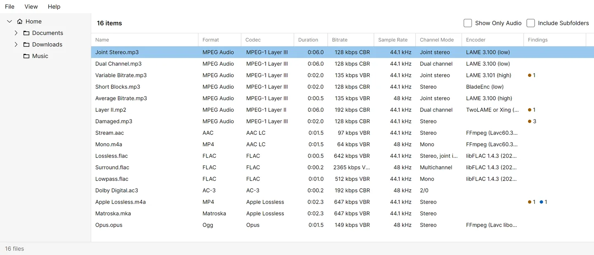
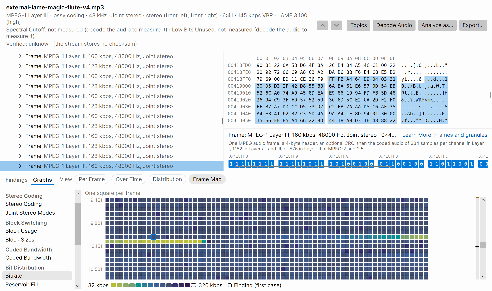

See what is inside an audio file.
Encspect reports everything technically knowable about an audio file's structure: the encoder and the software that wrote it, bitrate behavior, the bit reservoir, VBR headers, tags and damage. Every value it reports points back to the bytes it came from.
Free and open source under the MIT License. A graphical app and a command-line tool for Windows, macOS and Linux.

What it shows
-
Every value has a source
Each field in the structure tree carries its byte offset and length, down to single bits, and the hex view shows the bytes it was read from.
-
Encoders and writers
The encoder named by the stream's own evidence, the software that wrote the container, and where the two disagree.
-
Bitrate and coding
Bitrate over time, the bit reservoir, VBR headers, stereo modes, block sizes and frame sizes, drawn as graphs.
-
Damage reported, not hidden
Truncated, cut or corrupt files produce findings with a severity, each pointing at the node it concerns.
-
Checksums verified
The CRCs and MD5 sums that formats store are checked, on the coded data and, where a decoder exists, on the decoded audio.
-
Measured audio
Audio that a decoder reads (the lossless formats, MPEG audio, Vorbis, Opus, AC-3, E-AC-3, and the samples of WAV and AIFF) gets its spectrum and spectral cutoff, spectrogram, waveform, levels, loudness after EBU R 128, and true peak.
A closer look



Formats
Each container is read at its own level, and each stream by its frames.
- Lossy
- MPEG audio (MP1, MP2, MP3), AAC including HE-AAC and xHE-AAC, Vorbis, Opus, Speex, Musepack, AC-3 and E-AC-3 with Dolby Atmos object audio, DTS, Windows Media Audio
- Lossless
- FLAC, WavPack, Monkey's Audio, TTA, Apple Lossless, Dolby TrueHD and MLP, DTS-HD Master Audio, Windows Media Audio Lossless, OptimFROG and TAK
- Containers
- MP4 and QuickTime, Matroska and WebM, Ogg, ASF, WAV with RF64 and BW64, Wave64, AIFF
- Tags
- ID3v1 and ID3v2, APEv1 and APEv2, Lyrics3 v1 and v2, Vorbis comments
- Container metadata
- The containers' own metadata is read too: ASF and WMA, MP4 and M4A, Matroska and WebM, RIFF INFO in WAV, and the text chunks of AIFF
Download
Version 0.3.0, a pre-release: builds for Windows, macOS and Linux, on x64 and ARM64, are on the latest release page. They are not signed; see the release notes.
The command-line tool prints the structure tree of a file, or a JSON report:
encspect song.mp3
encspect --measure song.flacEncspect analyzes audio; it does not play or convert it. Command-line documentation · The graphical app
Samples wanted
Encspect names an encoder only from what it has seen real files from that encoder do. If you have files from a particular encoder, an old program or an unusual setting, they can help.